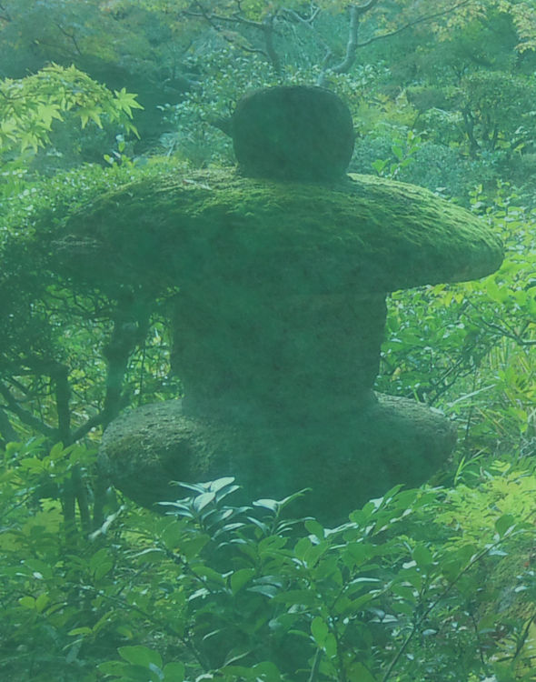

🏠
日
月
縦書き／横書き

| 2013.12.17 灯り - 2013.12.19 名前 Mica in my tummy | |
| もか | |
| (2013) | |
灯り 2013.12.17
夜にきらめく灯りをみていると、遠い世界で会話をしているだろう星達のように、ささやき声が聴こえてくる。
「今日もたくさんの人が通っていたね。」
「疲れた人もたくさんいたね。」
「とても嬉しそうな顔をしていた小さな男の子もいたよ。なにかわくわくすることがあるのかな。」
「明日は楽しい話し声がきこえてくるかな。」
「いつも全速力で自転車をこいでいる人、今日はけがをするんじゃないかとはらはらしたよ。」
電灯たちはいつもいつも私達をみていてくれる。
暗くなったら道筋を示してくれるあかりを、周りの世界の冷たさに驚いて、立ちすくんでしまっている時に、思い出すことができますように。あかりの存在に気がついていない人に、気づかせることができますように。
誰かのあかりになっているかな。
子供たちも、誰かのあかりになっているかな。
アナウンス 2013.12.18
通勤電車で毎日耳にする、車掌さんのアナウンス。
優しい声だと、耳だけでなく、身体のすみずみにまでしみ渡る気がする。
ゆったりとした気持ちにしてくれるものに、サービスや、落ち着いた空間、食べものや飲みもの、静けさなんかがあるけれど、言葉のやりとりだけで、こんなに心あたたまる気持ちになるのなら、世界中の人みなが優しい声で話せばよいのに。
動物も植物も、、優しい声で話しているんだろうか。
耳をそばだててみれば、ポストも、電信柱も、マンホールも、
「今日も元気にすごしていますか。
もし元気でないなら、明日はよいことがあるとよいですね。」
と、語りかけてくれているかもしれない。

名前 2013.12.19
病院の健診で何度か名前を呼ばれる場面がある。
「○○さん。」
ちょうど一年前、夫と婚姻届を出した、その時の苗字。
仕事でも、子供達の学校でも、友人からも、前の夫の苗字で呼ばれている。
離婚のときに、苗字を変更せずに新しい戸籍を作る選択をしたため、今の夫と結婚するまでは、戸籍上も、元の夫の苗字のままだった。
現在も、朝から夕方まで、仕事では元の夫の苗字。子供達と同じ苗字。
病院でだけ呼ばれている、この「○○さん」という名前も、新しく生まれる子供がこちらの苗字になるため、この子の母親としては、この苗字で呼ばれていくのだろう。
上の子達の苗字を今後どうしていくか、またこれからゆっくり考えていけばよいと思うのだけれど、愛着のある苗字をこのまま使い続けていくということも、本人の力になっていくと思う。
自分で好きなものを付けられる、ネットやラジオ、雑誌の投稿などでのハンドルネーム、家族や友人からもし愛称で呼ばれていれば、その呼び名、そして、学校や病院、仕事で使われる自分の本名は、全く質の違うもので。
今、お腹の中にいる間に赤ちゃんを呼ぶ時の呼び名、お腹から出てきた時に贈る新しい名前、実際になんて呼ぶか、それぞれそれぞれ。
愛着をもってその名前を呼ばれるとよいね、と願いつつ。